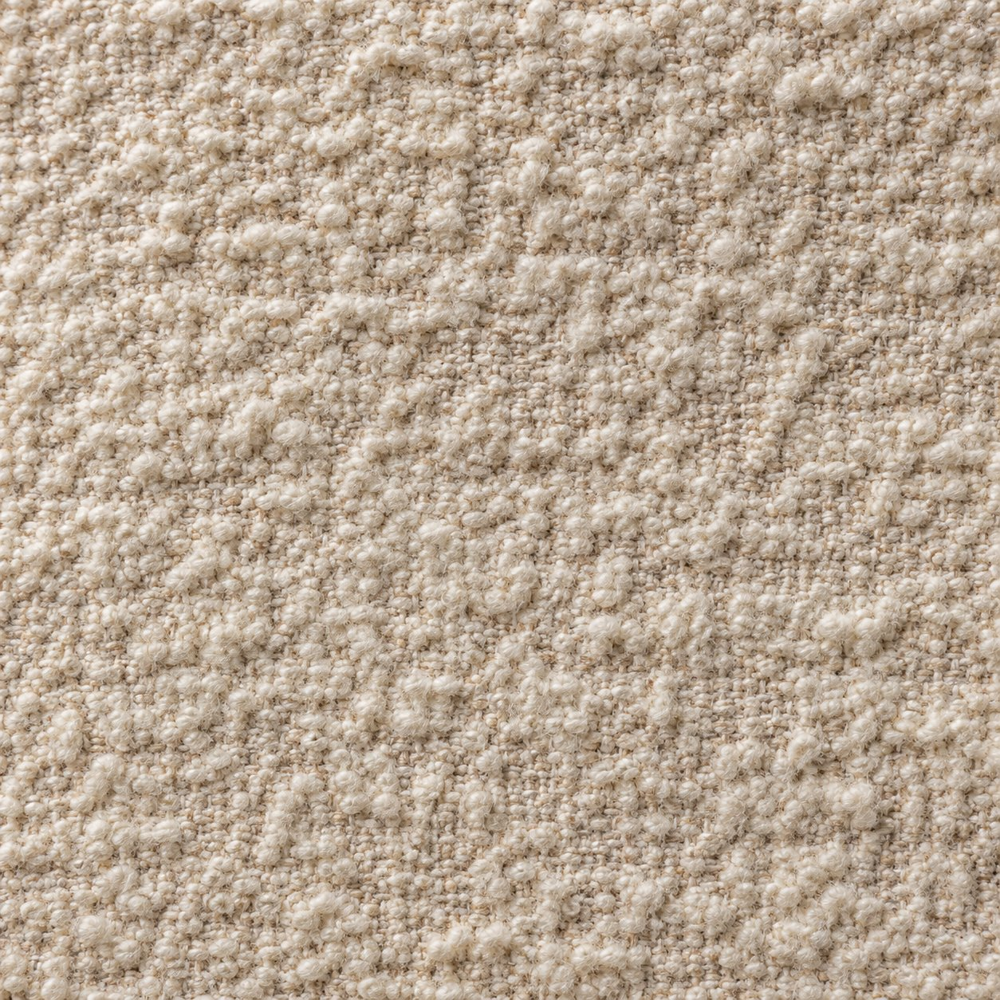

Dinləyirik
Məkanın istifadəsini, işıq və məxfilik ehtiyacını birlikdə dəqiqləşdiririk.
Parçanın toxunuşundan pərdənin son qatına qədər hər seçim məkanın işığına, ölçüsünə və gündəlik ritminə uyğun düşünülür.
Layihələrimizi kəşf edin ↗
TEKSTİL · SİSTEM · TƏTBİQ
1979-dan Sarvagelli pərdə, jalüz və tekstil həllərini məkanın ölçüsünə və ehtiyacına uyğun hazırlayır. Parça seçimindən fərdi tikiliş və quraşdırmaya qədər bütün mərhələlərdə müştərini müşayiət edirik.
Yaşayış interyerləri ilə yanaşı, hotel, restoran, ofis və ictimai məkanlar üçün də uyğun tekstil və pəncərə sistemlərini nəzərdən keçiririk.
Məkanın istifadəsini, işıq və məxfilik ehtiyacını birlikdə dəqiqləşdiririk.
Parça, rəng, sistem və idarəetməni interyer və texniki tələblərlə uzlaşdırırıq.
Ölçü, fərdi tikiliş və quraşdırma ardıcıllığını layihəyə uyğun planlayırıq.

Pərdələr, jalüzlər, karnizlər və adi və ya motorlu sistemlərlə yanaşı, mebel və dizayn parçaları, süni və təbii dərilər, akustik tekstil, hotel otaq tekstili, outdoor həllər və ZIP sistemləri üzrə seçimlər təqdim edirik.
Məhsul istiqamətlərinə baxın ↗Hotel və istirahət məkanlarından restoran, yaşayış və ictimai obyektlərə qədər seçilmiş işlərimizi nəzərdən keçirin.
Layihələrimiz ↗